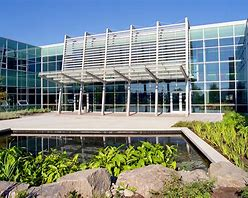

Civic Plaza Campus ↔ Richmond Campus
This route connects the Civic Plaza campus with the Richmond campus.
Whether you’re attending evening lectures, group projects, or events,
RideShare KPU makes your commute simpler, affordable, and eco‑friendly.

Civic Plaza Campus

Richmond Campus
Many students travel daily between these two locations. Carpooling
helps reduce travel stress and builds community among KPU students.
Why Choose This Route?
- Cost Savings: Share travel expenses with fellow students.
- Time Efficiency: Reduce your commute and parking time.
- Community: Meet classmates heading to the same destination.
- Environmentally Friendly: Lower your carbon footprint.
Typical Commute Info
The drive between Civic Plaza and Richmond typically takes about
35–45 minutes depending on traffic. Carpooling means fewer cars
and easier parking when you arrive.
How to Get Started
- Sign up with your KPU student email on RideShare KPU.
- Search for existing rides or offer your own ride.
- Connect with verified KPU students going the same way.
- Coordinate ride times through the platform.
- Enjoy your shared commute and save money!
Ready to Ride Civic ↔ Richmond?
Join the RideShare KPU community today and start sharing rides!
Join Now